Valentinstag Lückentext mit Wortspeicher

Advents-Ideen Gesamtpaket: 11 Materialien für die Adventszeit, Klasse 1–4

Male weiter!: 5 Bildanfänge für Fantasie-Bilder, Klasse 1–4

Zeichen-Duell im Advent: Genau beschreiben, genau zuhören, Klasse 2–4
Winter-Fragekarten: 32 Fragen für Kugellager und Sitzkreis, Klasse 2–4

Stadt, Land, Winter: Das Wörterspiel für die Adventszeit, Klasse 2–4
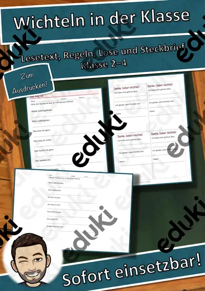
Wichteln in der Klasse: Lesetext, Regeln, Lose und Steckbrief, Klasse 2–4
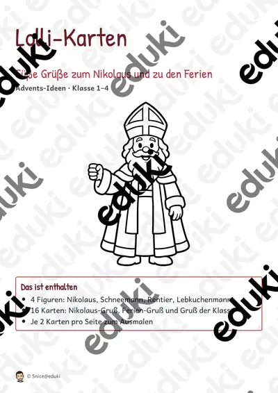
Lolli-Karten: Süße Grüße zum Nikolaus und zu den Ferien, Klasse 1–4

Winter- und Weihnachtsquiz: Schätzen, rechnen, wahr oder falsch, Klasse 3–4
Mein Rückblick-Baum: Nachdenken über das Jahr, Klasse 2–4

Würfel-Pulli: Würfeln, malen, staunen, Klasse 1–4
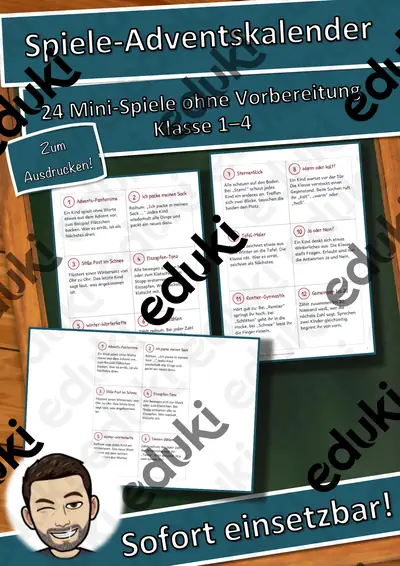
Spiele-Adventskalender: 24 Mini-Spiele ohne Vorbereitung, Klasse 1–4
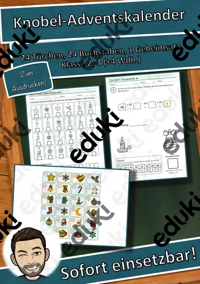
Knobel-Adventskalender: 24 Rätsel mit Lösungsbuchstaben und Geheimsatz, Klasse 2–3 (+4 Wdh.)

Gemeinschafts-Weihnachtsbaum: Klassen-Tannenbaum zum Ausmalen, 20–40 Teile mit Lageplan, Klasse 1–4
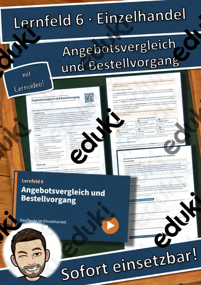
LF 6 Kaufleute im Einzelhandel: Angebotsvergleich und Bestellvorgang – Übungen, Lösungen + Lernvideo

Fächer-Steckbriefe A–Z Klasse 1–10: Baukasten für Lehrkräfte – kostenlos
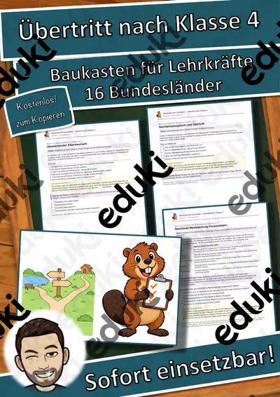
Übertritt nach Klasse 4: Baukasten für Lehrkräfte – kostenlos

Fächerwahl und Infoabende an allen Schularten: Baukasten für Lehrkräfte – kostenlos

Lernentwicklungsgespräche Klasse 1–10: Baukasten für Lehrkräfte – kostenlos

Jahreszeiten-Werkstatt: Ostern: Ausmalbilder mit Wörtern – Plus-Paket, Klasse 1–4
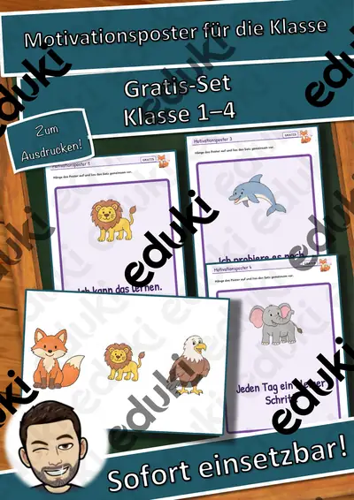
Klassen-Werkstatt: Motivationsposter für die Klasse – kostenlos, Klasse 1–4
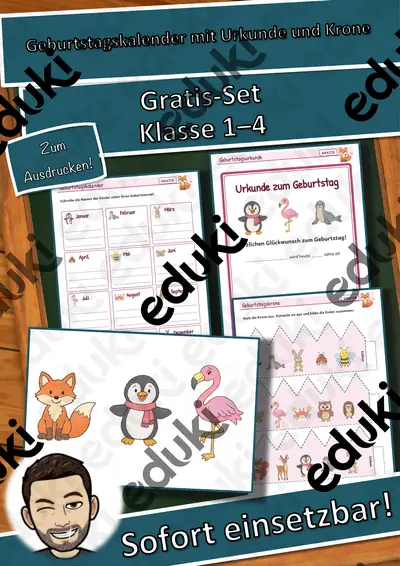
Klassen-Werkstatt: Geburtstagskalender mit Urkunde und Krone – kostenlos, Klasse 1–4
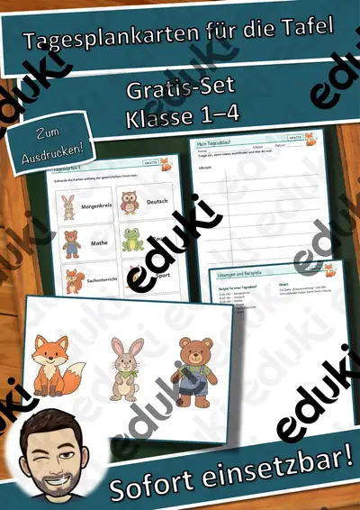
Klassen-Werkstatt: Tagesplankarten für die Tafel – kostenlos, Klasse 1–4
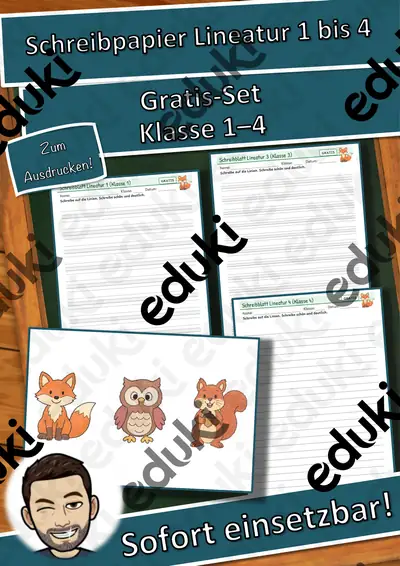
Klassen-Werkstatt: Schreibpapier Lineatur 1 bis 4 – kostenlos, Klasse 1–4
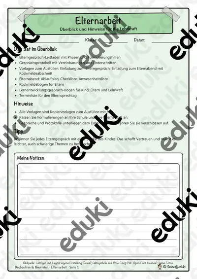
Elternarbeit für Lehrkräfte – Elterngespräch, Vorlagen Klasse 1–4
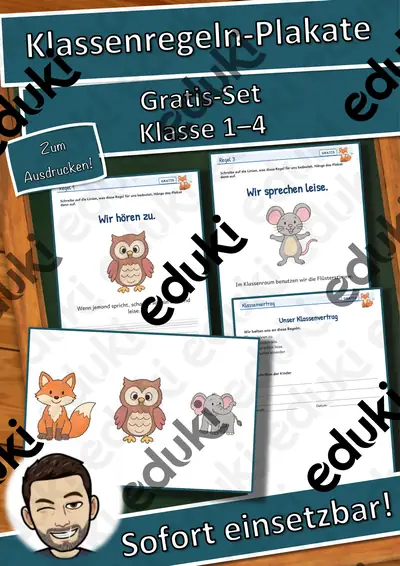
Klassen-Werkstatt: Klassenregeln-Plakate – kostenlos, Klasse 1–4
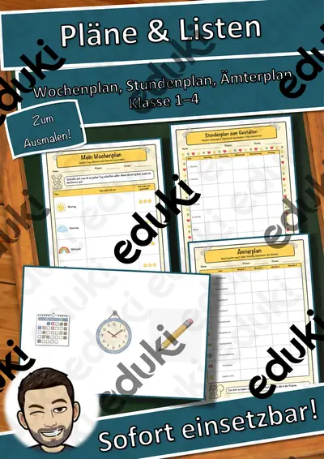
Pläne & Listen zum Ausmalen – Wochenplan, Stundenplan, Ämterplan Kl. 1–4
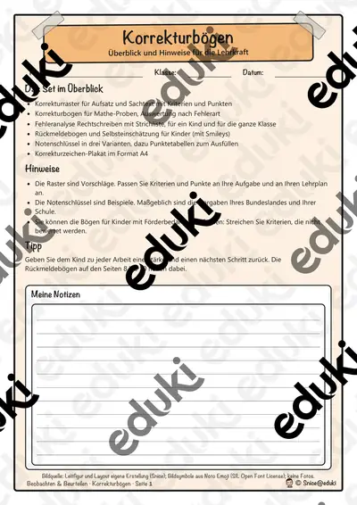
Korrekturbögen für Lehrkräfte – Korrekturraster, Vorlagen Klasse 1–4
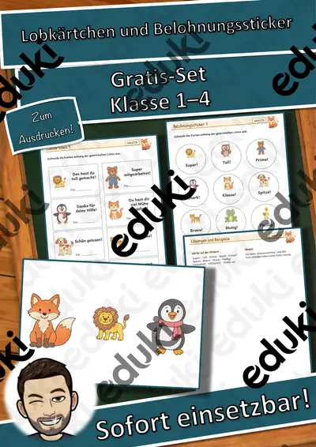
Klassen-Werkstatt: Lobkärtchen und Belohnungssticker – kostenlos, Klasse 1–4
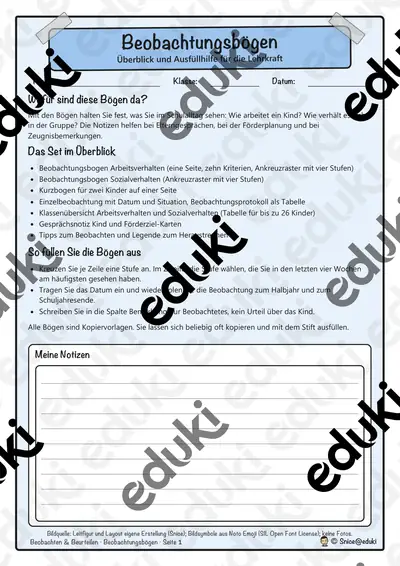
Beobachtungsbögen für Lehrkräfte – Arbeits- und Sozialverhalten, Vorlagen Klasse 1–4
Keine Materialien gefunden – versuch einen anderen Suchbegriff oder Filter.
Was hier gesammelt ist
Nicht alles im Schulalltag ist Unterricht im engeren Sinn. Elternabende wollen vorbereitet, Gespräche geführt, Klassenräume gestaltet werden. Diese Seite bündelt Material, das nicht zu einem einzelnen Fach gehört, sondern zum Alltag von Lehrkräften und Klassen.
Baukästen für Lehrkräfte
Zu dieser Gruppe gehören „Fächer-Steckbriefe A–Z Klasse 1–10: Baukasten für Lehrkräfte“, „Lernentwicklungsgespräche Klasse 1–10: Baukasten für Lehrkräfte“, „Übertritt nach Klasse 4: Baukasten für Lehrkräfte“ und „Fächerwahl und Infoabende an allen Schularten: Baukasten für Lehrkräfte“. Sie bieten fertige Bausteine, die sich für die eigene Schule anpassen lassen.
Klassengemeinschaft und Motivation
Für das Klassenzimmer gibt es „Klassen-Werkstatt: Motivationsposter für die Klasse“, „Motivationskärtchen Viel Erfolg (A6)“ und den „Gemeinschafts-Weihnachtsbaum: Klassen-Tannenbaum zum Ausmalen“, bei dem jedes Kind ein Teil gestaltet. Die „Jahreszeiten-Werkstatt“ liefert Ausmalbilder mit Wörtern, etwa zu Ostern.
Rätsel und Kleinigkeiten
Für Zwischenzeiten eignet sich das „Knobel-Adventskalender: 24 Rätsel mit Lösungsbuchstaben und Geheimsatz“, für den Valentinstag ein Lückentext mit Wortspeicher. Das „Kalenderpuzzle“ und kleine Ausmalbilder passen in die Vertretungsstunde.
Wie die Sammlung genutzt wird
Die meisten Materialien richten sich an die Klassen 1 bis 4, einzelne reichen bis Klasse 10 und sind vom Schultyp unabhängig. Wer ein bestimmtes Fach sucht, nutzt die Fachseiten, wer etwas für Schulalltag und Organisation sucht, ist hier richtig.
Wann sich ein Blick lohnt
Besonders vor Schuljahresbeginn, vor Elternabenden und in der Adventszeit lohnt sich ein Blick in diese Sammlung. Dann werden Unterlagen gesucht, die schnell einsetzbar sind, aber nicht an ein Fach gebunden sein sollen. Die Baukästen sparen dabei die meiste Zeit, weil sie nur noch angepasst werden müssen.
Häufige Fragen
Was ist ein Baukasten für Lehrkräfte?
Eine Sammlung vorformulierter Bausteine, aus der du Texte und Unterlagen für Gespräche, Briefe oder Infoabende zusammenstellst.
Sind die Materialien vom Bundesland abhängig?
Nein, sie sind allgemein gehalten. Landesspezifische Details trägst du selbst ein.
Eignen sich die Ausmalbilder für Vertretungsstunden?
Ja, sie brauchen keine Einführung und lassen sich sofort einsetzen.
Gibt es etwas für den Elternabend?
Ja, unter anderem die Baukästen zu Fächerwahl, Übertritt und Lernentwicklungsgesprächen.